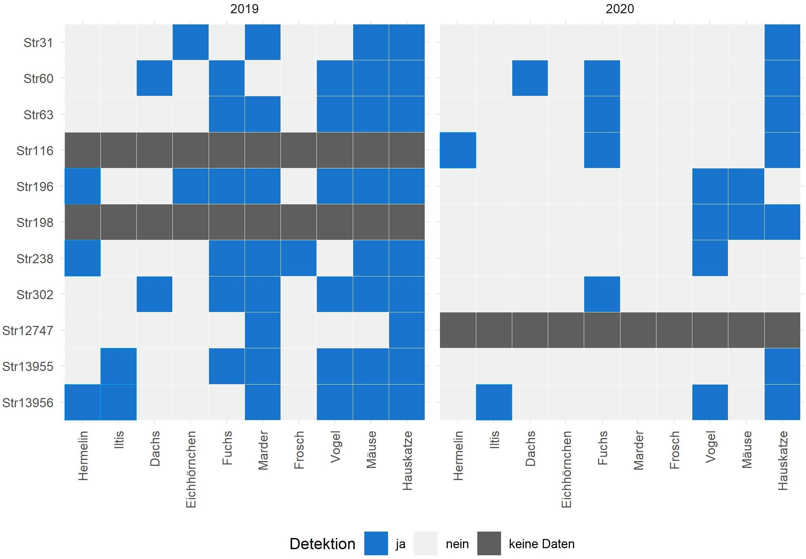
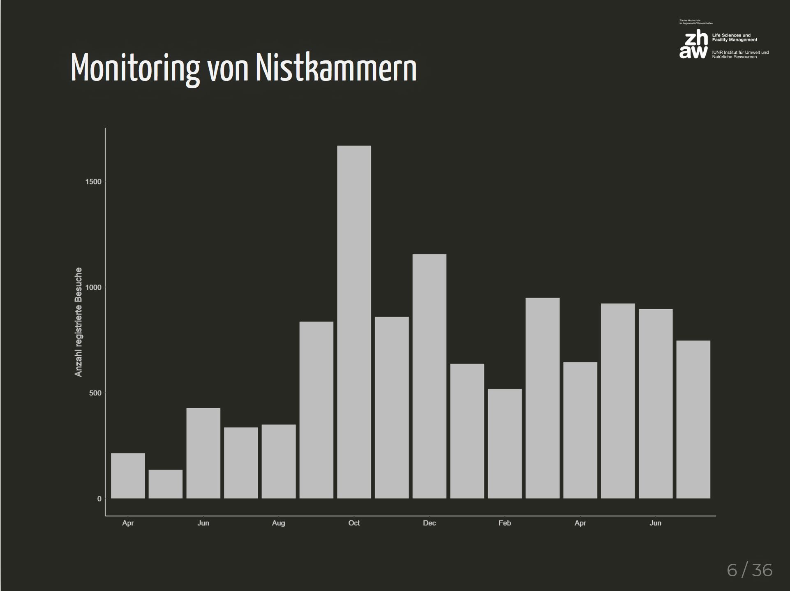
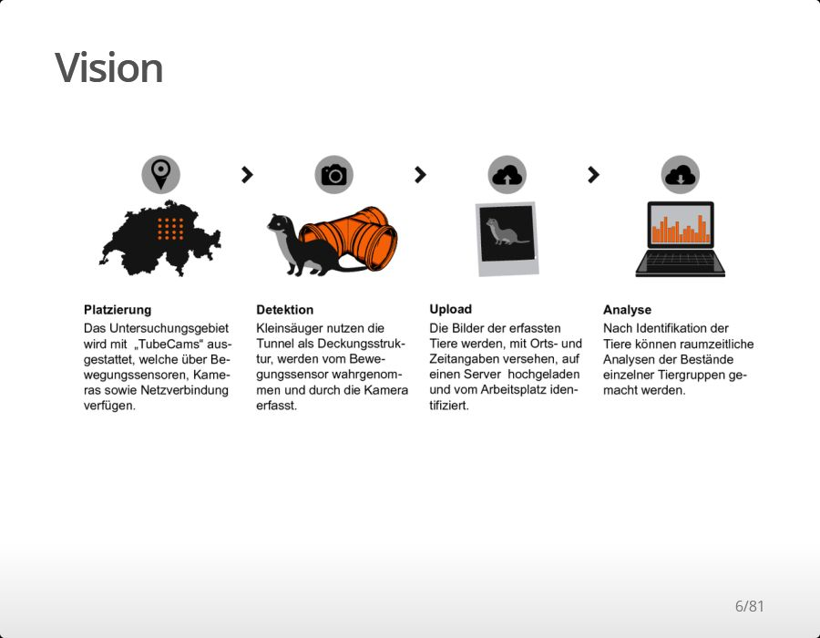

2019 und 2020 hat die ZHAW im Auftrag von Wiesel & Co am Zimmerberg die Erfolgskontrolle im Projekt durchgeführt.
forschung.wieselundco.ch/erfolgskontrolle

Anfangs 2021 veranstaltete WIN Wieselnetz das jährliche Treffen für Leiter von Wieselprojekten. Nils erzählte von aktuellen Forschungsprojekten an der ZHAW.
forschung.wieselundco.ch/WIN_2021

Nils erzählt von aktuellen Projekten und Vorhaben rund um das Thema Wieselforschung an der ZHAW.
forschung.wieselundco.ch/WIN_2018
